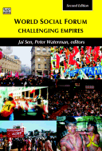
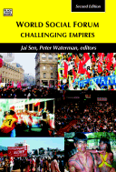
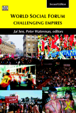

CACIM (the India Institute for Critical Action – Centre in Movement) is an initiative towards cultivating and nurturing a culture of critical reflexivity and action in individual and public work. In principle we expect to work in many fields, but our focus at the moment........
MORE

CACIM’s activities till date have been in all the three thrust areas that CACIM is now proposing to work in, Strategies and Cultures of ‘Movement’, Information / Culture / Technology, and Building Bridges. It has especially focussed on critical involvement with and intervention in the World Social Forum process at local, national, and transnational levels, towards generating sustained critical debate on key questions; and over more recent years has increasingly moved towards looking at the political-cultural concept of ‘open space’.
Bootstrap 4 has been noted as one of the most reliable and proven frameworks and Mobirise has been equipped to develop websites using this framework.
One of Bootstrap 4's big points is responsiveness and Mobirise makes effective use of this by generating highly responsive website for you.
Google has a highly exhaustive list of fonts compiled into its web font platform and Mobirise makes it easy for you to use them on your website easily and freely.
Mobirise gives you the freedom to develop as many websites as you like given the fact that it is a desktop app.
CACIM
(India Institute for Critical Action : Centre in Movement)
New Delhi
Ph +91-11-4356 2925